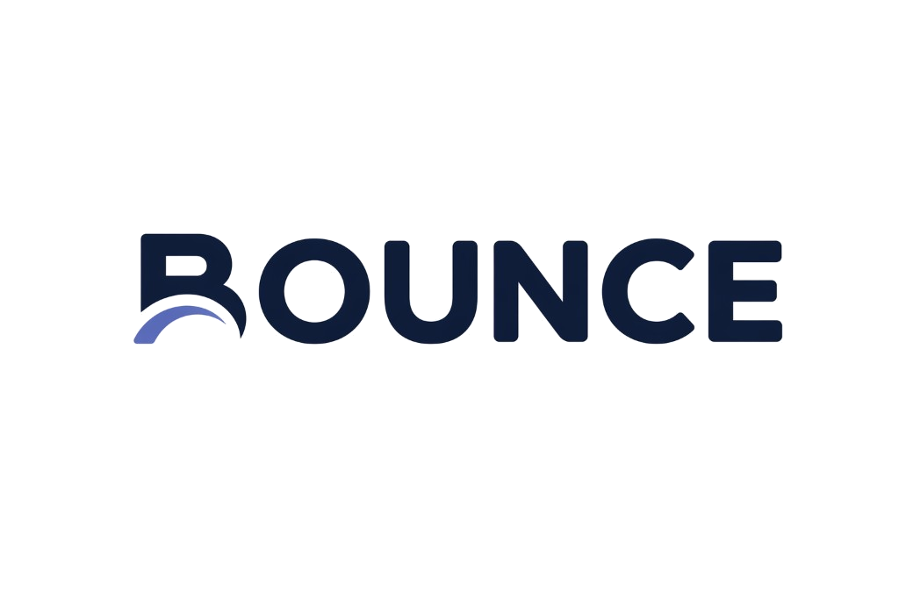
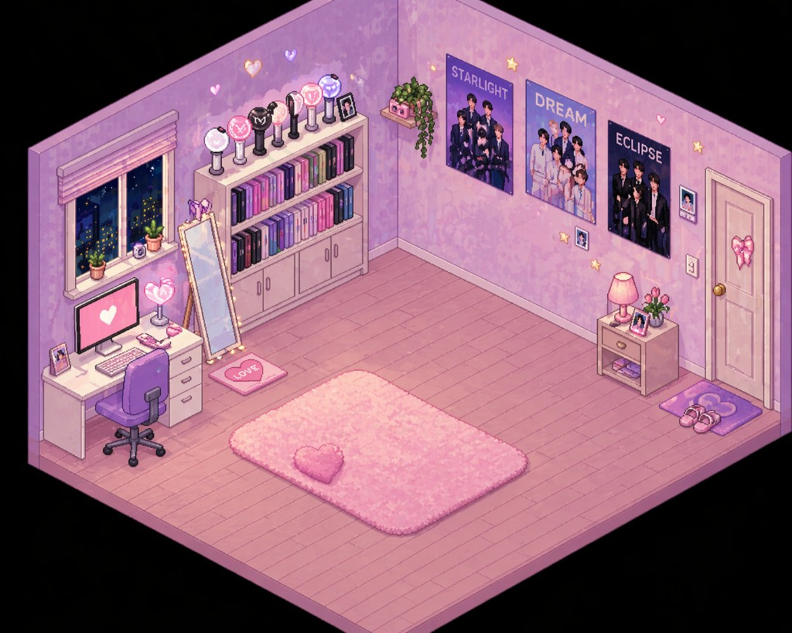
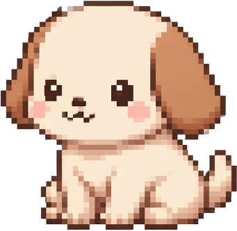
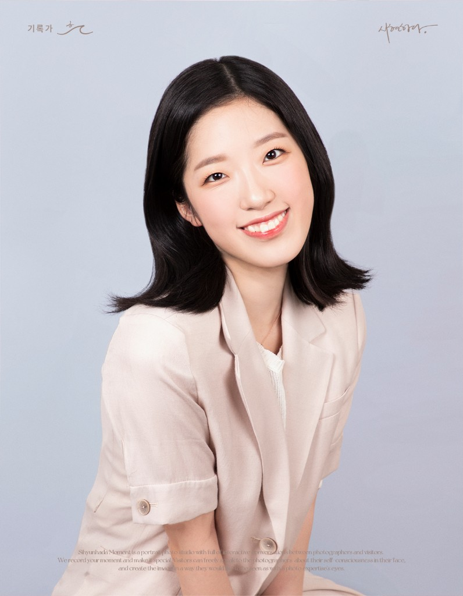
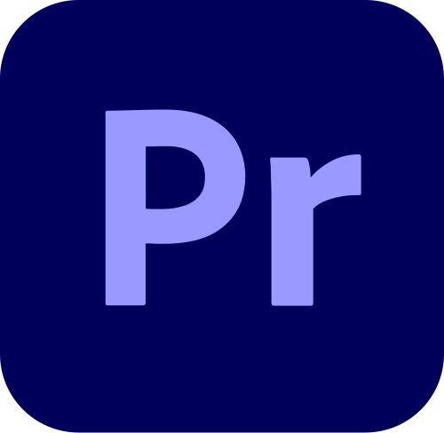
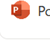
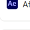
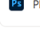

Education
- 서울 계성고등학교 졸업
- 한성대학교 재학
문학문화콘텐츠트랙 전공
기업경영트랙 전공
총 학점 4.47 / 4.5



드래그하면 옮길 수 있어요!
강아지는 클릭하면 멈추고, 다시 클릭하면 앉았다 일어나요.

문학문화콘텐츠트랙 전공
기업경영트랙 전공
총 학점 4.47 / 4.5

Premiere
PowerPoint
After Effects
Photoshop프로젝트의 일부분을 확인하실 수 있습니다
저의 브랜드가 마음에 드셨다면, 아래 버튼을 눌러 저를 채용해주세요!